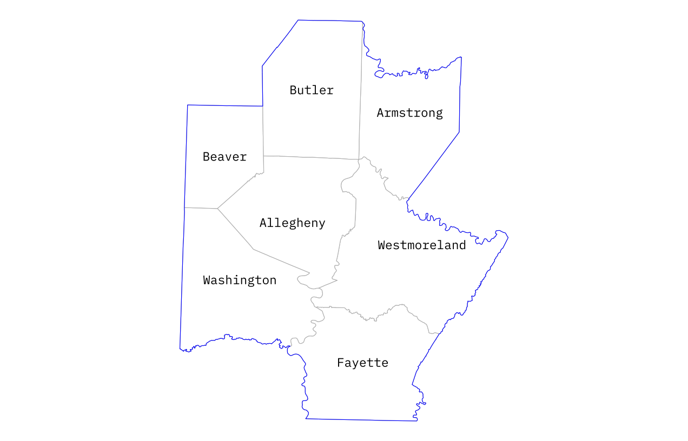
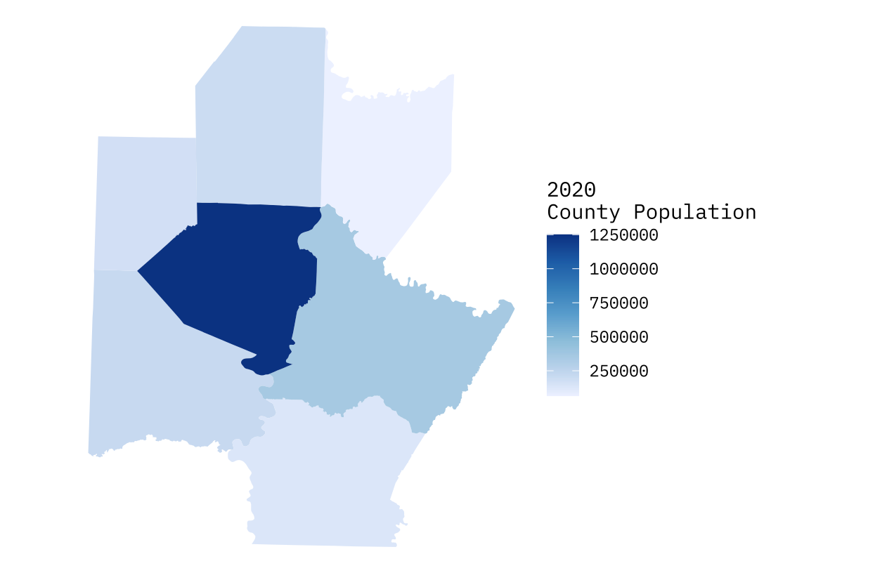
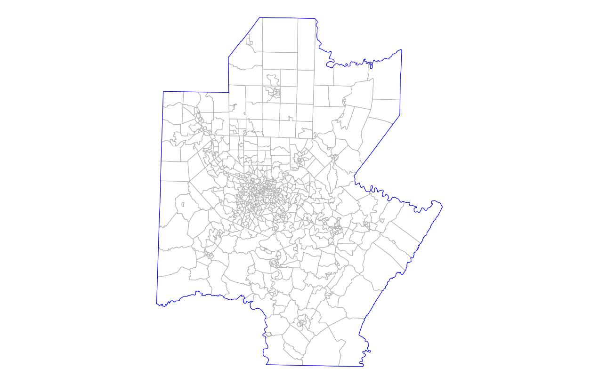
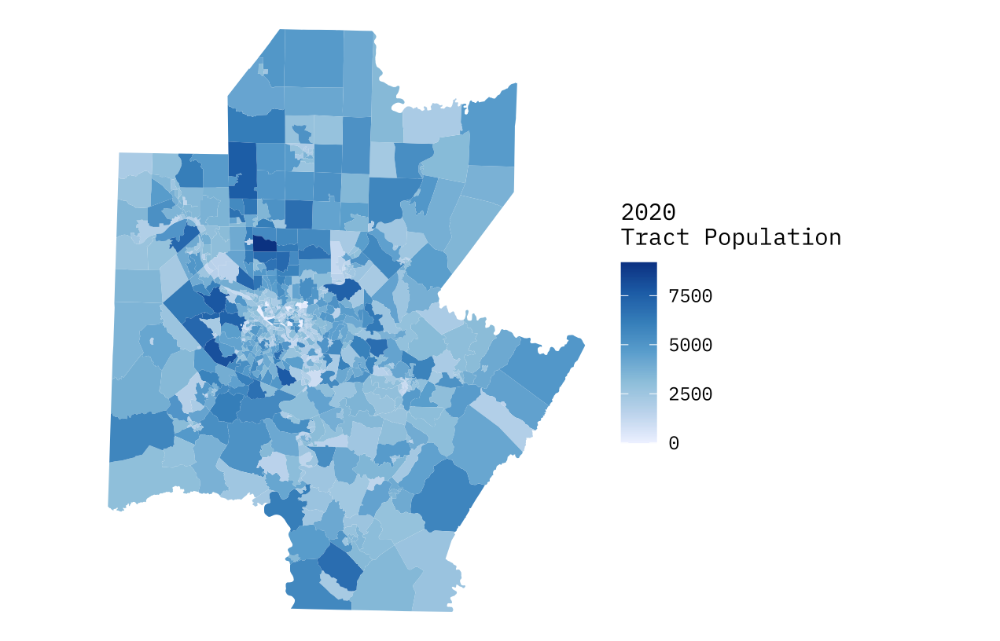
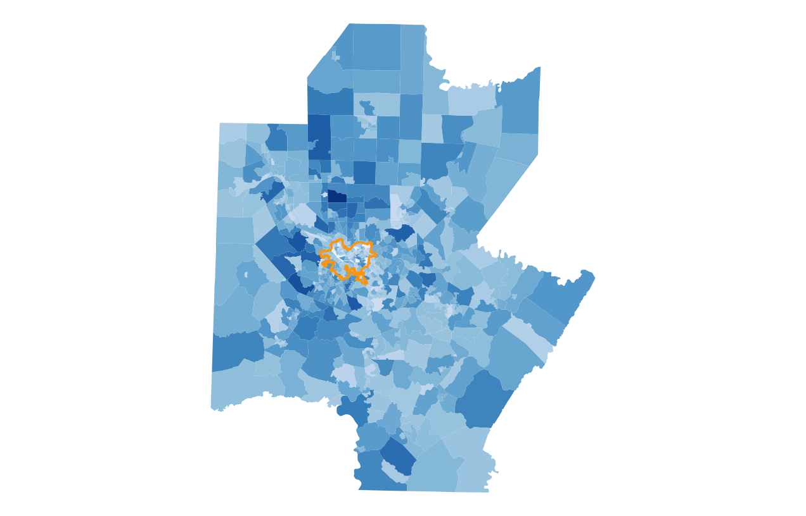
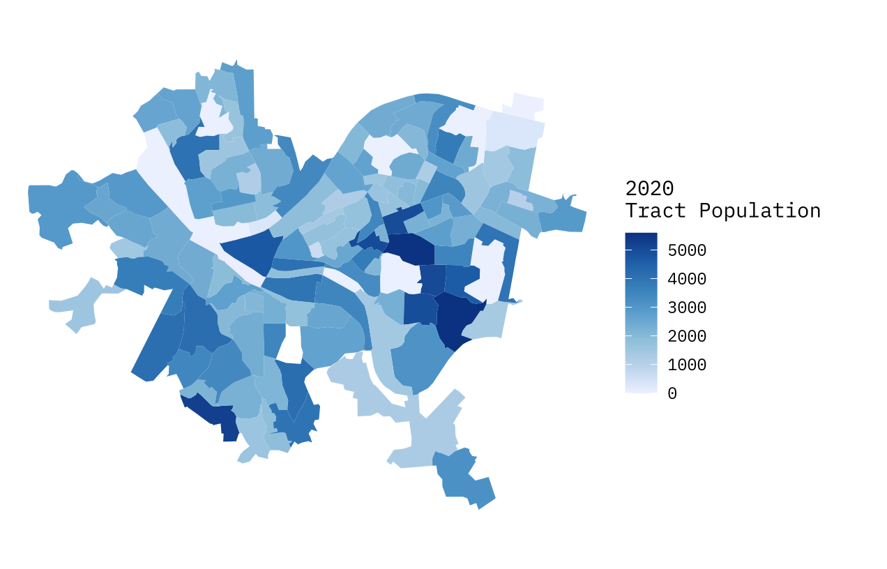
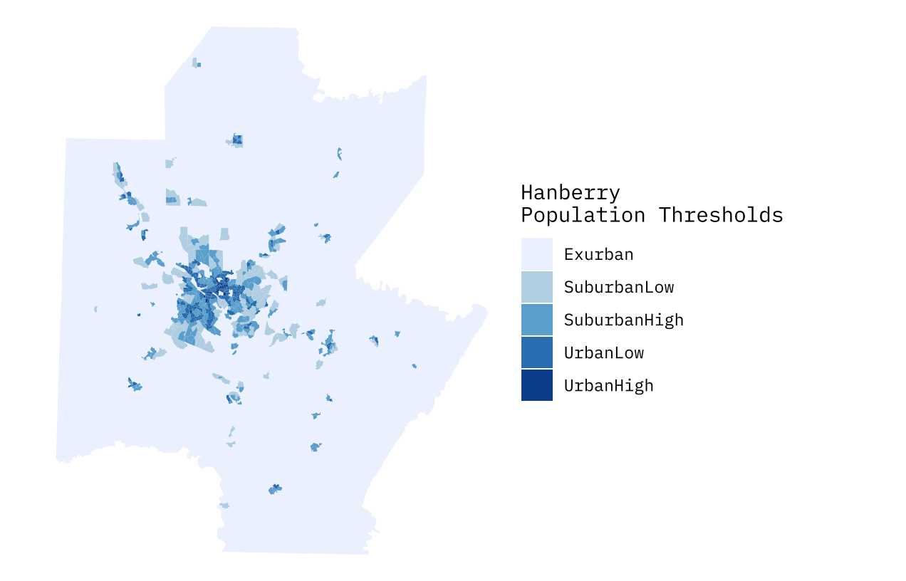
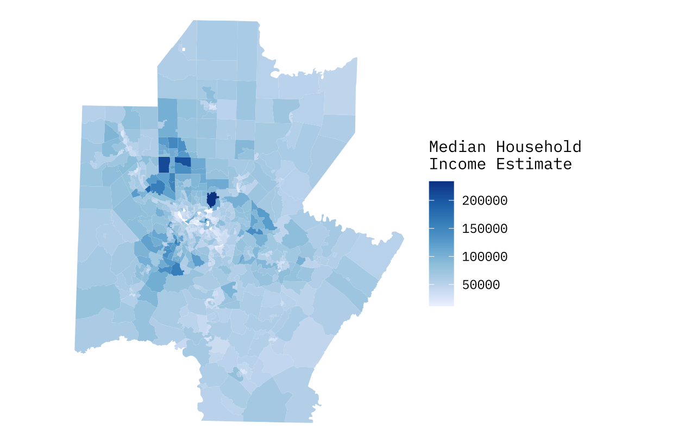

Spatial Analysis and Visualization
This project examines demographic and spatial patterns across the Pittsburgh Metropolitan Statistical Area (MSA). Using GIS packages in R, census data, and statistical analysis, I examines how socioeconomic characteristics are distributed across the Pittsburgh MSA.

The Pittsburgh Metropolitan Statistical Area (MSA) is located in the state of Pennsylvania, and is comprised of 7 different counties. Those are Allegheny, Armstrong, Beaver, Butler, Fayette, Washington, and Westmoreland County. As of 2020, the Pittsburgh MSA has a total population of 2,370,930 people.

Of the 7 counties in the Pittsburgh MSA, the most populous as of 2020 was Allegheny County, with a total population of 1,250,578 people. In second is Westmoreland with 354,663 people, then Washington with 209,349, Butler with 193,763, Fayette with 128,804, and lastly, Armstrong County with only 65,558 people.

Other than counties, the primary geographic unit used in this project are Census Tracts. There are a total of 724 total tracts within the Pittsburgh MSA.

When examining the Pittsburgh MSA population by tract, the data does not immediately appear to be indicative of any single urban core. To better understand population, it is helpful to visualize population tracts at a scale of the city of Pittsburgh itself, as the smaller tracts are obscured in the initial scale of the full MSA.


The city of Pittsburgh is located centrally within the Pittsburgh MSA. There are several tracts within the city with a population of roughly 5,000 people or greater. Relative to the larger tracts on the periphery of the Pittsburgh city limits, these small tracts are very densely populated. This perspective does unveil a somewhat monocentric pattern, and helps to explain why Allegheny County dwarfs the population figures of all other counties in the MSA.

For a better understanding of population, Hanberry's (date) method of classifying urban space is helpful. This method has been adapted for the Pittsburgh MSA geography and classifies tracts into five bins based on their population density. Those classes are Exurban (0-550 people/square km), Suburban Low (550-1000 people/square km), Suburban High (1000-1900 people/square km), Urban Low (1900-4500 people/square km), and Urban High (4500+ people/square km).
The Hanberry thresholds more accurately reaveals that urban space is in fact concentrated centrally within the Pittsburgh MSA, with some significant outliers of high population density scattered about all counties on the periphery. There does appear to be a strong cluster of UrbanHigh tracts within Pittsburgh itself, which only affirms the data from the previous figures but with clearer visualization to support it.

Income in the Pittsburgh MSA follows an interesting pattern. The high population density clustering in Pittsburgh itself does not have the same pattern of clustering for median houshold income. Rather, the greater income values are on the immediate periphery right outside of the high density population clusters. This may indicate that lower population suburban communities are dominating the representation of people with higher income in the Pittsburgh MSA, or potentially, that very low population Exurban tracts are inhabited by a few very wealthy residents.
Toggle race/ethnicity in the layers panel of this interactive leaftlet map. A higher location quotient value suggests a more significant level of segragation within that tract.